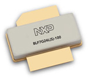
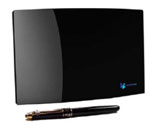
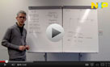
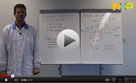

| EVENTS! |
CCBN2012
NXP will be exhibiting at the 20th China Content Broadcasting Network Exhibition – CCBN2012 – will take place from March 21 – 23, 2012 in the prestigious China International Exhibition Center (CIEC) in Beijing.
http://www.ccbn.tv/ |
| NEW LITERATURE |
APPLICATION NOTES:
AN11152
Reducing the Spurs at RF_out caused by the biasing choke during fa-solidt switching on and off in TDD system
AN11086
BGU7003 LNA application for GPS L2 band
AN11135
Replacing HMC625 by NXP BGA7204
AN11103
Externally-matched 900 MHz LNA using BGU7005
AN11090
50 Ohm FM LNA for embedded Antenna in Portable applications with BGU6102
AN11091
Ohmic FM LNA for embedded Antenna in Portable applications with BGU6102 |
LEAFLET:
RF power transistors for leading LTE basestation performance at 2.3 to 2.4 GHz
Click here > |
| EDUCATIONAL TOOLS |
Resources:
Design Tool Portal
NXPs online design portal helps simplify your design with free online tools
Click here >
Cross Reference Tool
The new cross-reference tool is primed with several thousand competitor part numbers
Click here >
Quick Links:
RF Manual - 15th edition
Click here >
HPRF Website
Click here > |
|
New Products
BLF7G24LS-100 and 140
RF Power transistors for leading LTE Basestation performance at 2.3 to 2.4 GHz
Designed for LTE basestations and built in industry-leading Gen7 LDMOS, these highly DPD-friendly transistors cover the entire frequency range of 2.3 to 2.4 GHz. They enable asymmetrical Doherty designs delivering efficiencies of 44% and 15 dB gain.
BLF7G24LS-140
BLF7G24LS-100
In the News
BFU760F bipolar LNA strengthens performance of NorthVu’s Innovative Indoor Digital TV Antenna
NorthVu selected our BFU760F based on the exceptional low-noise performance, while having much better ESD robustness than GaAs counterparts. The combination of NorthVu Systems’ patent-pending antenna technology, with our LNA technology, yields the NV-20 Pro: a high-performance digital-TV/FM UHF/VHF antenna in an industry-first compact form-factor. We did multiple amplifier design iterations with very fa-solidt turn-around, highly appreciated by NorthVu.
READ MORE >
NXP achieved ZTE yearly supplier’s honor of "The Best Technical Innovation Award" with its high efficiency RF Power amplifier technology
According to ZTE, the Best Technical Innovation Award recognized NXP’s continuous contribution with outstanding technical innovation of high efficiency RF power amplifier solution for UMTS and 1800M GSM applications. Mr. Mike Yeh, NXP Senior Vice President and GC Regional Sales Manager joined the ZTE award ceremony on behalf of NXP, and accepted the award from Mr. Wenguo Tian, ZTE EVP.
READ MORE >
ADC Design Tool Now Available
The ADC Design Tool enables interactive performance analysis for NXP’s High Speed Analog-to-Digital Converters. The guided online selection and evaluation process eliminates the need to browse through large amounts of online documentation to quickly identify a specific converter and determine its performance characteristics. Users can create custom data sheets by analyzing the converters under a variety of operating conditions through powerful simulation. A comprehensive design summary report allows users to capture the results of the analysis in PDF format.
Try it today!
|
Videos:
NXP Semiconductors Quick Learning:
XR product family
 These transistors have an extreme good ruggedness and can survive a mismatch of 65:1. This session is brought to you by Regional Marketing EMEA and presented by Walter Sneijers, Lead Engineer. Again, the setting is simple: white board + engineer + marker + max 5 minutes recording time = NXP Quick Learning. Audience: anyone interested in the techniques and products & applications of NXP. Please check it out here at the NXP Semiconductors YouTube Quick Learning Playlist.
NXP Semiconductors Quick Learning: Flexible RF-LNA Design using the BGU7003
 This week’s edition of NXP Semiconductors Quick Learning is about the BGU7003 Biased RF Transistor. It enables easy and flexible Low Noise Amplifier design for frequencies up to 6GHz. This session is brought to you by Regional Marketing EMEA and presented by Tom Buss, Principal RF Application Engineer. Again, the setting is simple: white board + engineer + marker + max 5 minutes recording time = NXP Quick Learning. Audience: anyone interested in the techniques and products & applications of NXP. Please check it out here at the NXP Semiconductors YouTube Quick Learning Playlist.
|
|